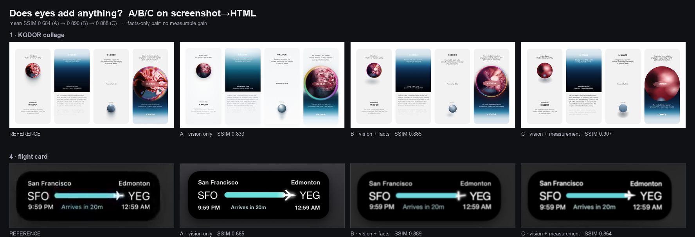
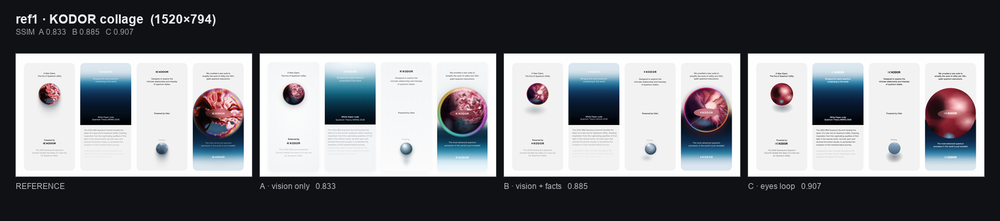
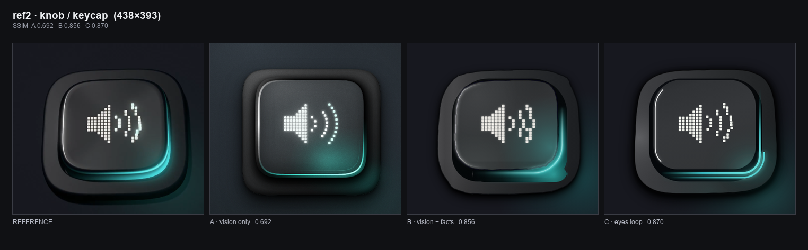
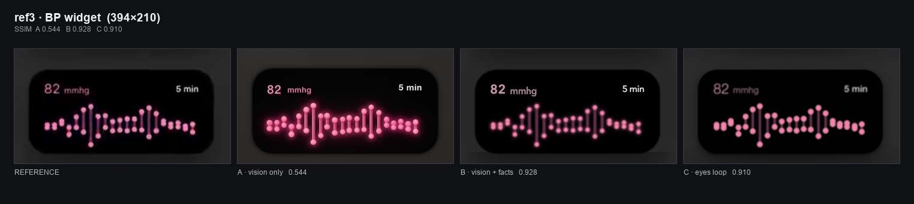
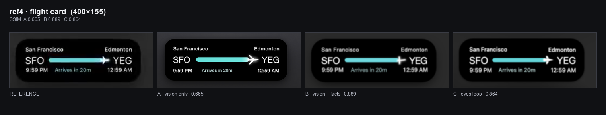
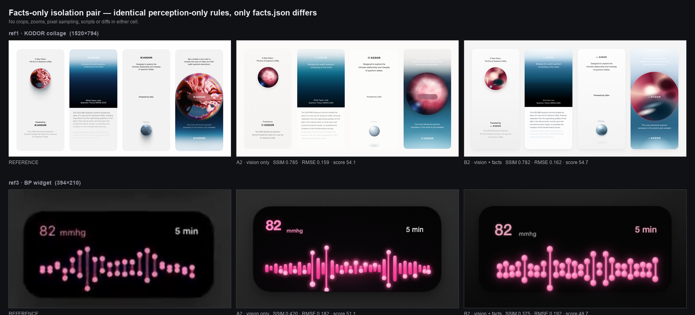

eyes add anything? A controlled reproduction testQuestion. For a multimodal agent that can already see, does the eyes
instrument improve screenshot→HTML/CSS reproduction, or is it redundant?
Short answer (details below). As a perception substitute it is largely
redundant and sometimes harmful: in the clean facts-only pair the sheet changes
nothing (ref1 0.785 vs 0.782 SSIM; ref3 0.420 vs 0.375), and it injects errors.
As a measurement instrument it is genuinely additive: vision-only averages
0.684 SSIM, a measurement loop averages 0.888 — a +0.20 jump, and the
same jump the agents got from building their own rigs (B 0.890, C 0.888). The
useful artifact for this task is parse/score/pixdiff, not interrogate's
fact sheet.

Four references from deepseek_package/images/, three sensing modes, isolated
directories, identical renderer (render.sh, headless Chrome at exact reference
size), identical iteration budget (3-5 render→look→fix cycles), same model for
every cell (deepseek-account/deepseek-flash).
| arm | extra input | live tools |
|---|---|---|
| A | none — vision only | none |
| B | facts.json = precomputed eyes interrogate sheet |
none (facts-in-context) |
| C | none | eyes score, pixdiff, zoom in the loop |
Arms are blind to each other: each cell is its own directory; Arm A never sees a fact sheet, Arm B never runs a tool, Arm C never reads the sheet.
After the first run exposed a protocol confound (B agents built their own measurement rigs — see "Protocol adherence"), two clean isolation cells were added: A2 vs B2, identical perception-only rules, on ref1 and ref3, with the fact sheet as the only difference. One slot was free and the failure was systematic, so re-running all four was not necessary to establish the direction.
Judging: eyes pixdiff SSIM (pixel truth, independent of the semantic scorer),
changed-pixel fraction, full-resolution RMSE, and eyes score normalized
against each reference's self-score ceiling. The self ceiling matters: an
identical image does not score 100 (see "Scorer calibration" below), so raw
scores are not comparable across references.
Caveat: 3 of 4 references are photographic/3D product renders, so pixel fidelity
is capped by "can CSS fake a render" rather than by perception. ref1 carries
most of the signal; ref3/ref4 are tractable widgets; ref2 mainly tests
glow/shape approximation.

Both A and B get the four cards, copy and layout; B pulls ahead on the orbs and
spacing. C wins on pure geometry. B renders the sheet's MOwQ OCR error; A and C
get M0WQ right.

A reads it as a rounded square. B traces the plate silhouette and neon from sampled edges; C traces the silhouette and fits the tube arc. Both B and C are recognisably the same object; A is a sketch of it.

The biggest gap: A misses the card geometry and the bead rhythm (0.544). B measures 21 columns at 13.2px pitch (0.928); C closes the loop to 0.910.

A's plane is an arrow. B measures every row's ink box (0.889); C's loop (0.864) is close but its semantic score fell while its pixels improved — see the calibration section.
interrogate emits six question groups: background, glow, text inventory,
layout family, alignment, selection/accent blobs. Claim-by-claim audit against
the images:
#f4f4f4 (42%) — true (card background is ~#f5f5f5).unstructured undersells it: it is a 4-up card grid.M0WQ→MOwQ, "advanced quantum"→"advenced quentum", Thinking...→Thinking...y=151 "KKODOR KKODOR We unveiled a
new suite to" → "right". Three independent centered cards have been fused
into one right-aligned line. This is the single most dangerous output for a
reproducer, because it looks precise and is wrong.
(Cause: eyes/interrogate.py _row_items() groups by y with no x-clustering,
then classifies the union's bbox — interrogate.py:135-157.)#141c1c (18%) — plausible for the dark teal-grey ground.[186,157,186,157] rgb(49,144,145) fill .16 — true and
useful: that is the teal rim light's position and hue. This blob is the
sheet's best contribution on this reference.#040404 (43%) — true.82, mmhg, 5 min — 3/3 correct.[49,100,286,84] rgb(168,94,127) and [49,68,30,16] — true:
the ECG band and the "82". Good anchors.#040404 (47%) — true.San, San Francisco, 9:59,
9:59 PM, 12:59, 12:59 AM, Arrives, 20m. All substrings are real,
but 7 real phrases have become 12 overlapping fragments. A reproducer that
renders the inventory literally will duplicate text. Missing in.[110,70,160,16] rgb(106,193,197) — true: the turquoise
progress line's position and color. Shape "disc-ish" is wrong (it is a bar),
but the geometry is right.Probe-by-probe, across the four references:
| probe | ref1 | ref2 | ref3 | ref4 | usable? |
|---|---|---|---|---|---|
| background/palette | correct | bin vs true color dispute | correct | value right, label wrong | 3/4 |
| glow | useless (white page) | wrong target (specular) | false negative | false negative | 0/4 |
| text inventory | missing hero line, garbled | n/a (no text) | correct | fragment soup | 2/4 |
| layout family | 4 columns correct | n/a | "1×7" undercounts 21 columns | "3×19" odd | 1/4 |
| alignment | wrong (fuses cards) | n/a | "wide", useless | "wide", useless | 0/4 |
| accent blobs | coarse anchors | teal rim correct | ECG + "82" correct | track correct | 3/4 |
Independently, the four B agents recorded 10 distinct fact-sheet conflicts in their VERDICTs (glow 3×, blob-is-not-a-selection 3×, palette 1×, structure 1×, text fragments 1×) and corrected them from vision. The sheet's consumers spent part of their budget auditing the instrument.
Also: the reported hexes are 5-bit bin centers, not sampled colors
(eyes/color.py:34-55). #17181f quantizes to #141c1c, #f5f5f5 to
#f4f4f4; every channel can be off by ±4. That is fine for "roughly this
color", misleading if a reproducer uses the hex verbatim. B/ref2 caught exactly
this and rendered the true #17181f.
The sheet is QA-shaped, not rebuild-shaped. It answers "what is in this
image?" — palette, rough regions, OCR tokens — and says nothing about what a
reproducer actually needs: per-element bounding boxes, border radii, font
size/weight/line-height, gradient stops, shadow parameters, per-column grouping.
Worse, it stamps every field "confidence": "measured", when the text inventory
and alignment are frequently partial or wrong. That violates the project's own
SCENE rule — "if the instrument can't measure something, it says so, it doesn't
guess". A consumer that trusts the label will be misled exactly where its own
eyes were better.
For comparison, eyes parse already emits normalized element/text bboxes — much
closer to a rebuild spec than interrogate's answers. It is the better artifact
for this task, and interrogate is the wrong one to ship in an A/B package.
Identical images do not score 100:
| reference | self-score | palette component |
|---|---|---|
| ref1-collage | 93.4 | 0.737 |
| ref2-knob | 89.6 | 0.584 |
| ref3-bp | 96.6 | 0.863 |
| ref4-flight | 96.9 | 0.874 |
Cause: score_palette (eyes/score.py:206-212) intersects the top-8 palette
bins only, and those bins cover less than all pixels, so the maximum reachable
component is the top-8 coverage (exactly the numbers above: 0.7373, 0.5844,
0.8630, 0.8741). Fix: normalize by sum(ref_fracs) in the denominator, or add
an explicit other bin. Without that, a fixed 3-15 point penalty is baked into
every score, and cross-reference comparisons are invalid.
The same component is also brittle to tiny global color shifts, because it
is an exact 5-bit-bin intersection with no color-distance tolerance. On
ref2-knob (self-score 89.6):
| perturbation | composite score |
palette | SSIM | mismatch |
|---|---|---|---|---|
| none | 89.6 | 0.584 | 1.000 | 0.0% |
| brightness +2% | 82.1 | 0.545 | 0.9999 | 0.0% |
| brightness −2% | 53.3 | 0.342 | 0.9982 | 0.0% |
| Gaussian blur 1px | 73.6 | 0.578 | 0.9848 | 1.5% |
A 36-point composite swing for a change that is invisible in SSIM and to the
eye. Consequences: (a) score is not a fidelity metric, it is a color-exactness
metric with sharp cliffs; (b) B has an artificial advantage on score,
because the fact sheet hands it the exact palette hexes while A must estimate
them; (c) the repo's reproduction loop optimizes this scalar, so it is partly
optimizing bin luck. Use ssim_mean/mismatch_frac for truth, and treat
score as a semantic sanity check only. A perceptual palette distance
(nearest-bin within a ΔE tolerance, or soft histogram) would fix the cliff.
The composite can even move opposite to pixel truth on a fine edit. C/ref4's recorded trajectory:
| iteration | composite score | SSIM | what happened |
|---|---|---|---|
| 1 | 86.0 | 0.801 | crisp first build |
| 2 | 78.1 | 0.810 | redrew the plane as a swept-wing SVG |
| 3 | 78.5 | 0.864 | slimmed plane, 1px softening, brighter text — best by every pixel measure |
The composite dropped 7.5 points while SSIM rose 0.063, because Mirage began
labelling the plane as an "arrow" and the card as a "smartphone screen". An agent
that optimized the composite would have kept the worse image. That is textbook
Goodhart: the semantic scorer is a useful coarse signal and a bad fine
objective. The agent noticed and reported it — but a loop that only sees score
would not.
The arms did not stay methodologically identical. Evidence in the cell directories:
| cell | what the agent actually did |
|---|---|
| A/ref1 | crop/grid overlays of the reference (perception aid) |
| A/ref2 | no extra artifacts; vision only |
| A/ref3 | measure.html overlays, reports 21 measured bar positions |
| A/ref4 | no extra artifacts; vision only |
| B/ref1 | reports "pixel samples of the reference to calibrate geometry, text sizes and gradient stops" |
| B/ref2 | gen.py + diff.png (rendered diff) |
| B/ref3 | gen.py, probe.json, diff.png; reports pixel MAE; 7 render cycles (budget was 5) |
| B/ref4 | work/diff.png |
| A2/B2 | clean pair: full-image perception only, no crops/sampling/scripts; B2 read facts.json |
So B is not "facts in context only". Given a sheet that presents itself as measured, the B agents spontaneously built measurement rigs and closed the loop by diffing their render against the reference. A did not (with the partial exception of A/ref3, which measured the reference but did not diff its output).
Consequence: the A→B gain cannot be attributed to the fact sheet's
information content. It is confounded with "the agent started measuring". That
is itself a real effect — the sheet changes the process — but it is not the
effect the package claims to test. This is why a clean isolation pair
(A2/B2, ref1, identical perception-only rules, no crops/scripts/sampling,
fact sheet the only difference) was added.
score_palette (eyes/score.py:206-212): normalize by top-8 coverage so
an identical image scores 1.0; optionally soft-assign each candidate bin to
the nearest reference bin (RGB/ΔE tolerance) instead of exact-hex
intersection. In a quick prototype, soft assignment gives 1.000 for identical,
0.990 for 1px blur, 0.934 for +2% brightness (vs 0.863 / 0.578 / 0.545 today).interrogate alignment (eyes/interrogate.py:135-157): cluster row items
by x-gap (or use structure cells) before classifying alignment, and emit a
bbox per cluster. Today a 4-column layout is fused into one right-aligned row.San + San Francisco,
9:59 + 9:59 PM), report coverage (lines found / lines detected), and stop
labelling partial OCR "measured" — "measured" currently implies ground
truth, which is exactly where the sheet misleads.parse's per-element bboxes (they are
normalized and accurate to a few px) plus layout; leave interrogate for
QA-style questions. An A/B package that claims to test "screenshot→HTML"
should not hand the model QA answers.RUNBOOK.md's render command is chrome --headless --screenshot
--window-size=W,H. On this machine (Chrome 157 / macOS) that captures a W×H
PNG but lays the page out in max(500, W) × (H−87) — the window frame and a
500px minimum window width leak into CSS. Measured: 400×155 → innerWidth
500, innerHeight 68; 394×210 → 500×123; 1520×794 → 1520×707.
Consequences: vw/vh, width:100%, and right/bottom resolve against the
wrong box; a right:12px element lands at x≈488 in a 400px capture, i.e.
off-canvas. One arm hit exactly this mid-run.
Fix: tools/cdp_shot.js (added) sets the layout viewport explicitly via
Emulation.setDeviceMetricsOverride and captures with CDP. Verified: all twelve
final A/B/C candidates re-render pixel-identically under it, so this quirk did
not corrupt the results — but it will bite anyone who uses the documented
command with viewport-relative CSS. render.sh in this experiment was left
unchanged so all cells stayed comparable.
Pixel metrics are the honest ones. score is shown against each reference's
self-ceiling.
| ref | arm | SSIM ↑ | mismatch ↓ | RMSE ↓ | score/ceiling | self-est |
|---|---|---|---|---|---|---|
| ref1-collage | A | 0.833 | 16.7% | 0.123 | 67.5/93.4 | 7 |
| ref1-collage | B | 0.885 | 9.2% | 0.105 | 76.1/93.4 | 6 |
| ref2-knob | A | 0.692 | 26.5% | 0.124 | 50.8/89.6 | 5 |
| ref2-knob | B | 0.856 | 7.7% | 0.073 | 63.8/89.6 | 6 |
| ref3-bp | A | 0.544 | 20.7% | 0.117 | 51.3/96.6 | 6 |
| ref3-bp | B | 0.928 | 4.7% | 0.047 | 77.8/96.6 | 7 |
| ref4-flight | A | 0.665 | 12.9% | 0.160 | 76.4/96.9 | 7 |
| ref4-flight | B | 0.889 | 6.1% | 0.060 | 89.1/96.9 | 8 |
B wins every pixel metric on every reference, and the margin grows with how much the B agent measured:
M0WQ→MOwQ (A got M0WQ
right); B correctly took A New Dawn, from vision (the sheet omits it).SFO at 45, YEG
right edge 340, type sizes) and reports whole-image MAE 5.85/255.But per the protocol section above, B's agents were measuring, not just reading the sheet. The clean A2/B2 pairs isolate the sheet itself.
Same model, same references, same renderer, same cycle brief, perception-only
rules identical in both cells (no crops, zooms, pixel sampling, scripts or
diffs). The only difference is facts.json. (B2/ref1 ran 8 cycles against a
3-5 brief, with no measurable benefit for it.)
| ref | arm | SSIM ↑ | mismatch ↓ | RMSE ↓ | score/ceiling |
|---|---|---|---|---|---|
| ref1-collage | A2 (no facts) | 0.785 | 22.6% | 0.159 | 54.1/93.4 |
| ref1-collage | B2 (facts) | 0.782 | 19.7% | 0.162 | 54.7/93.4 |
| ref3-bp | A2 (no facts) | 0.420 | 22.9% | 0.183 | 51.1/96.6 |
| ref3-bp | B2 (facts) | 0.375 | 26.6% | 0.192 | 48.7/96.6 |
The fact sheet adds nothing measurable when the agent cannot measure. ref1 is a dead heat; ref3 is slightly worse with facts. This is the cleanest evidence for the central claim: the sheet's content (palette hexes, OCR tokens, rough blob positions, alignment labels) is redundant with what a multimodal agent can see, and it does not contain the geometry that the hard parts need (bead pitch/height, card metrics, font metrics). The B2/ref3 agent even noted that the sheet's structure claim under-counted the 21 waveform columns — the sheet says "1 row × 7 cols".
Caveat: n=2 references, one run each. Directionally clear, not statistically strong.

| ref | A (vision) | B (facts + self-measure) | C (eyes loop) |
winner |
|---|---|---|---|---|
| ref1-collage | 0.833 | 0.885 | 0.907 | C |
| ref2-knob | 0.692 | 0.856 | 0.870 | C |
| ref3-bp | 0.544 | 0.928 | 0.910 | B |
| ref4-flight | 0.665 | 0.889 | 0.864 | B |
| mean SSIM | 0.684 | 0.890 | 0.888 | tie |
Mean RMSE: A 0.131, B 0.071, C 0.067.
Two things stand out:
eyes. The source of the
measurement barely matters; closing the loop does.C's traces also show the loop's real texture: positioning bugs found and fixed (ref3 iter1→2), font metrics fitted against ink stats (ref3 iter4), gradients rebuilt from sampled profiles (ref3 iter5), and — in ref1 and ref4 — composite scores that fell while pixel fidelity rose (see calibration above). The agents that succeeded used the score as a coarse signal and SSIM/pixdiff as truth. The agents that trusted the composite would have shipped worse images.
Every agent was asked for a 1-10 fidelity estimate. The estimates cluster in 5-8 and correlate only weakly with SSIM (Pearson 0.42 across the 12 cells that had both): A/ref3 rated itself 6 at SSIM 0.544, B/ref1 rated 6 at 0.885, A/ref1 rated 7 at 0.833. The agents cannot reliably tell how close they are — which is exactly the gap a deterministic score is supposed to fill. It also means the self-estimate column is not evidence of anything except confidence.
Is eyes an addition to what a multimodal agent can already do?
As a fact sheet: no. The clean isolation pair is the answer — with perception
held constant and only facts.json added, ref1 is a dead heat (0.785 vs 0.782)
and ref3 gets worse (0.420 vs 0.375). The sheet tells a seeing agent things it
can already see (three strings, a dark card, pink blobs), omits the things it
actually needs (per-bead pitch, card metrics, font metrics), and is wrong often
enough that its consumers spent part of their budget auditing it: 10+ recorded
conflicts, a 0/4 hit rate on the glow probe, a wrong alignment model for
multi-column layouts, and an OCR error (M0WQ → MOwQ) that propagated into
B/ref1's HTML while the vision-only A got it right. It is a compression of
vision, and a lossy one.
As a measurement instrument: yes, decisively. Vision-only averages 0.684 SSIM.
With a measurement loop — eyes score/pixdiff/zoom (C) or the agent's own
recording rigs (B) — the average is 0.889 (B 0.890, C 0.888). That +0.20 is the difference between
"recognizable approximation" and "same widget". The loop supplies the two things
perception does not: a calibration signal (the agents' own 1-10 estimates
correlate at only r≈0.42 with measured fidelity) and localization (where the
error is, in pixels, at what magnitude). It also explains why the package's A/B
looked so good for B: the fact sheet cued the agents to measure, and measuring
did the work. B and C tie with their different instruments.
This is not an argument against the project — it is the project's own thesis.
PRD.md says frontier models "fall back to algorithmic tools (crops, color
thresholding, intensity profiles, code execution) for precise quantitative
analysis". SCENE.md's ideal user is a text-only agent that "can run commands
and read JSON". For that user the fact sheet is the eyes. For a multimodal
agent, the eyes are already there; what is still missing is the ruler.
What I would ship next
parse's per-element bboxes (normalized, accurate to
a few px) and layout, not interrogate's answers. A "rebuild spec" probe —
element bboxes, radii, font size/weight, gradient stops, shadow params — is
the missing artifact.ssim_mean/mismatch_frac, with score as
a coarse gate. Fix the palette term (normalize by coverage; soft/ΔE matching),
so identical images score 100 and ±2% brightness does not cost 36 points."measured"; cluster
alignment rows by x before classifying; dedupe nested OCR fragments.interrogate, fix its confidence, and
add the rebuild spec. If the goal is any agent: the loop is the product.eyes score is the instrument under test and its judge; SSIM/RMSE are the
independent checks and the ones I trust. Even so, SSIM is dominated by large
flat areas: a wrong but well-placed orb costs less than a shifted card.cd ab_runs
python3 score_all.py # A/B/C -> results.json / results.md
python3 score_clean.py # A2/B2 -> clean_results.json
python3 gallery.py # -> gallery.png
python3 clean_pair.py # -> clean_pair.png
python3 gallery_html.py # -> gallery.html
Each cell keeps reference.png, TASK.md, render.sh, candidate.html,
candidate.png, VERDICT.md (and trace.jsonl for arm C).
REPORT.md · regenerate with
uv run --with markdown python ab_runs/render_reports.py